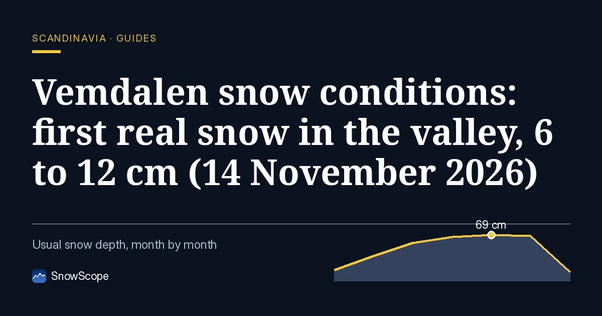
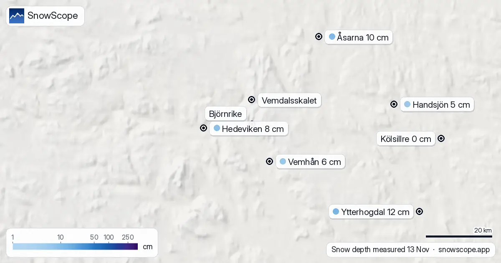

Vemdalen snow conditions: first real snow in the valley, 6 to 12 cm (14 November 2026)
Vemdalen has had its first proper snow of the season. The weather stations in the valleys around Vemdalsskalet and Björnrike all went from bare or 1 cm on 11 November to between 6 and 12 cm on the morning of 13 November. Hedeviken, 17 km away at 420 m, measured 8 cm; Vemhån at 404 m 6 cm; Åsarna at 448 m 10 cm; and Sveg at 371 m 12 cm. The slopes themselves are higher, so there is likely a little more up there.
See the live snow forecast for Vemdalsskalet in the SnowScope appSnow depth, powder alerts and the 3D map, free.

Two days that made the difference
The pattern is the same at every station: zero until 10 November, a centimetre on the 11th, then a jump on the 12th and 13th. It was one storm that covered the whole of Härjedalen and southern Jämtland.
Our own estimate for the last seven days is about 14 cm of new snow at Vemdalsskalet and 12 cm at Björnrike. That fits the station readings, allowing for some settling.

The coming week
We expect about 8 cm over the next seven days at Vemdalsskalet, at every height from 590 to 944 m, and about 8 to 9 cm at Björnrike. Other forecasts range from 13 to 19 cm. Rain is not an issue: almost none of the water falls as rain, even at the base, and the snow line stays low, around 220 to 240 m.
Normal for mid-November
Our 46 past winters give Vemdalsskalet a usual depth of 14 cm at the top and 10 cm at the base on 14 November, rising to 37 and 29 cm by 15 December. So today's 6 to 12 cm in the valleys is close to normal. Vemdalen is not a deep-snow place: a middle winter peaks at 87 cm at the top, and the best weeks are in March.
The long record shows a slow decline here: at the top of Vemdalsskalet the middle peak was 94 cm in the first 15 winters and 76 cm in the last 15.
When the lifts start
SkiStar's event calendar has a ski premiere, ski test and Christmas market in Vemdalen from 26 to 29 November 2026, on newly opened slopes at Vemdalsskalet. It does not give a separate date for Björnrike. On 13 November no lifts were running.
Tips for skiers
- New snow on unfrozen ground melts from below; the first cover may look deeper than it is under the trees.
- If you want to ski in late November, the premiere weekend at Vemdalsskalet is the realistic target, not earlier.
- Cross-country tracks often open before the lifts here: check the local trail report.
More maps (external sites)
References and credits
- SMHI, open data: daily snow depth at Swedish weather stations www.smhi.se/data/meteorologi/ladda-ner-meteorologiska-observationer
- SkiStar Vemdalen, events: ski premiere 26-29 November 2026, read 2026-11-13 www.skistar.com/sv/vara-skidorter/vemdalen/vinter-i-vemdalen/evenemang/
- SkiStar Vemdalen, weather and slopes www.skistar.com/sv/vara-skidorter/vemdalen/vinter-i-vemdalen/vader-och-backar/
About these numbers
Measured snow: morning readings of 13 November 2026 at the official weather stations of Sweden (SMHI open data), Finland (FMI open data, CC BY 4.0) and Norway (MET Norway station reports, CC BY 4.0, as published by Ogimet). Norway's national snow map seNorge (NVE and MET Norway, NLOD) gives the estimates on a 1 km grid for the slopes. Opening dates: the resorts' own pages, read on 13 November 2026. Run length and lift count: OpenSkiMap mapping.
Official avalanche bulletins: Lavinprognoser (Naturvårdsverket)
Cite this report
For research, teaching or the press: the numbers and charts are free to reuse under CC BY 4.0 with this citation.
SnowScope (2026), Vemdalen snow conditions: first real snow in the valley, 6 to 12 cm (14 November 2026), https://snowscope.app/blog/en/2026/11/vemdalen-snow-conditions-14-november-2026.html, accessed 2026-11-14
SnowScope (Atlas Labs). (2026, November 14). Vemdalen snow conditions: first real snow in the valley, 6 to 12 cm (14 November 2026). SnowScope snow reports. https://snowscope.app/blog/en/2026/11/vemdalen-snow-conditions-14-november-2026.html
BibTeX
@misc{snowscope2026vemdalensnowconditions14,
author = {{SnowScope (Atlas Labs)}},
title = {Vemdalen snow conditions: first real snow in the valley, 6 to 12 cm (14 November 2026)},
year = {2026},
month = nov,
howpublished = {\url{https://snowscope.app/blog/en/2026/11/vemdalen-snow-conditions-14-november-2026.html}},
note = {Published 2026-11-14 15:09 UTC; accessed 2026-11-14}
}· CC BY 4.0 · Methods, data and tools →
Vemdalsskalet: snow and temperature by height, this winter vs last (tools) →
Follow Vemdalsskalet
Free: a message when fresh snow is coming, and the forecast every morning.
More snow reports

Göteborg has 0 cm of snow on 14 November. The weekend is mild. November's leash rules are relaxed: explore parks and forests with your dog.

No snow in Bergen on 14 November: bare ground in town, 5 cm at Kvamskogen 35 km away. Heavy rain Sunday. Year-round dog rules apply.

On 13 November, 133 of Sweden's 322 weather stations had snow. The deepest lay in a belt from Dalarna to Västerbotten, with Sälen at 45 cm, while the far north remained almost bare.